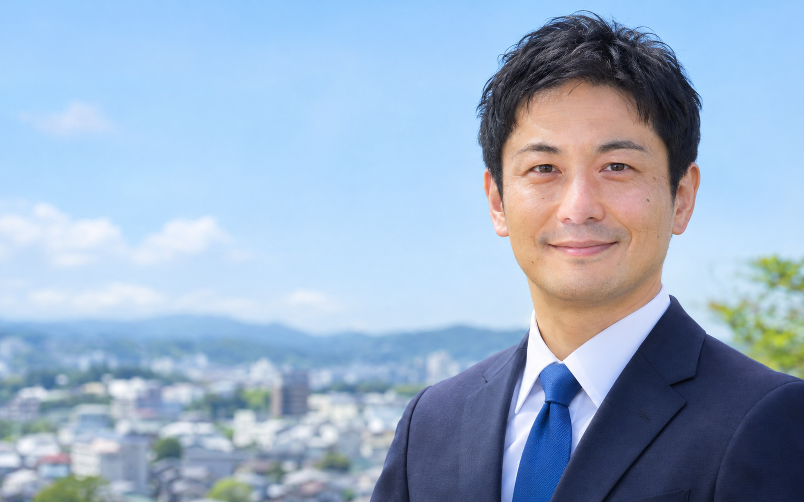
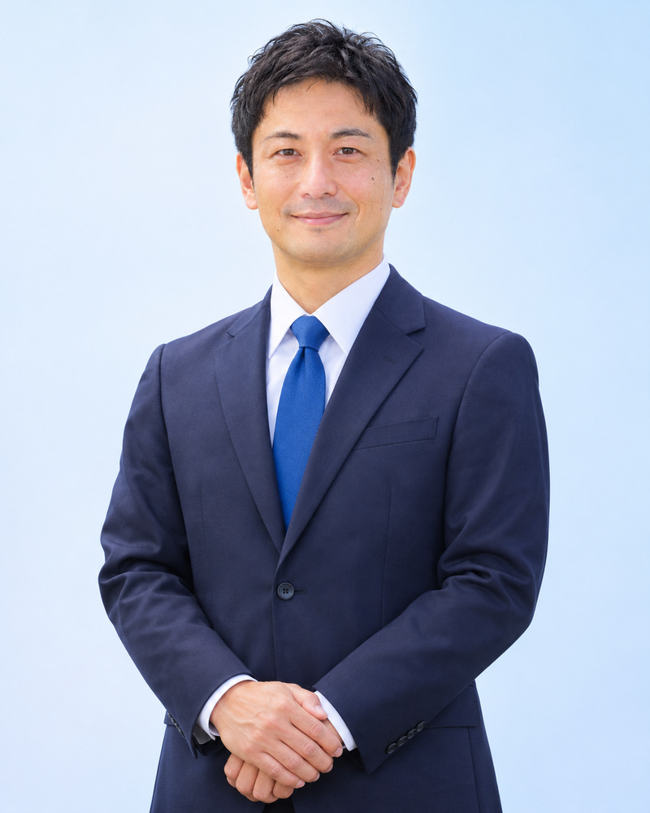

01
子育てを、街ぐるみで
放課後の居場所を全小学校区に。一時預かりの予約をスマホで完結。
制作見本・人物/市町村/政策はすべて架空です

みなと川市議会議員候補 青山ゆうと
みなと川市で生まれ育ち、地元の物流会社で12年間、地域の暮らしを支える仕事をしてきました。
子育て、介護、通勤。「ここが変われば楽になるのに」という声を、たくさん聞いてきました。でも、その声が市政に届く場所は、まだ少ないままです。
聞くだけで終わらせない。一つひとつの声を、確かに市政へ届けます。
01
放課後の居場所を全小学校区に。一時預かりの予約をスマホで完結。
02
避難所の備蓄と案内表示を見直し、自治会の防災訓練を後押し。
03
コミュニティバスの路線と本数を、利用者の声で見直します。
04
窓口に行かなくて済む手続きを増やし、書類の負担を減らします。

みなと川市議会議員候補青山ゆうと(41)
1985年、みなと川市生まれ。県立大学 地域政策学部を卒業後、地元の物流会社に入社し、配送計画と地域連携を担当。2020年から町内会の防災部長を務める。家族は妻と子ども二人。趣味はランニング。
暮らしの困りごと、市政へのご意見を、公式LINEで受け付けています。
いただいた声は、すべて自分で読みます。すぐに答えが出せないことも、どこで止まっているのかをお伝えします。
この街の「困った」を、一緒に一つずつ減らしていきましょう。
公式LINEで声を届ける